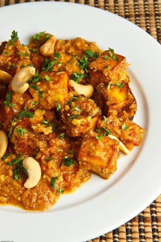

Butter Paneer Masala is one of the most popular vegetarian dishes from Indian cuisine. Indian cottage cheese in smooth, creamy and delicious restaurant style gravy.

Ingredients
1 tablespoon butter
2 cups paneer (cut into bite sized cubes)
1 tablespoon butter
1 onion (pureed)
1 teaspoon garlic (grated)
1 teaspoon ginger (grated)
1 teaspoon red chili powder
3 tablespoons cashews (ground)
1 cup tomato (pureed)
1 teaspoon coriander (ground)
3/4 teaspoon turmeric
1 tablespoon garam masala
1 tablespoon butter
3 tablespoons yogurt
cilantro (chopped)
Method
Melt the butter in a pan.
Add the paneer and fry until golden brown on all sides.
Let the paneer soak in warm water for 30 minutes.
Melt the butter in a pan.
Add the onion and saute until brown.
Add the garlic and ginger and saute until fragrant, about a minute.
Add the chili powder, cashews, tomatoes, coriander, turmeric and garam masala and simmer for 5 minutes.
Add the paneer and simmer for 10 minutes.
Remove from heat and stir in the butter and yogurt.